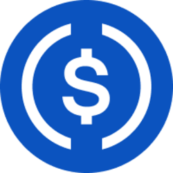
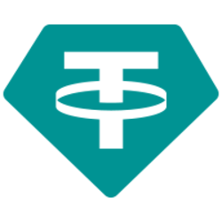

Cost components
Expect source-chain gas, destination claim gas when required, token approval gas, and any route-specific fee shown before signing. Polygon's Portal guide explains where users choose routes and check transaction status.
Polygon Bridge — Move supported tokens between Ethereum and Polygon networks while reviewing route, gas, claim, and security assumptions.
Live preview — open Polygon Bridge to bridge on Polygon.
Polygon bridge usually refers to using Polygon Portal to move supported assets between Ethereum and Polygon networks. The official Polygon Portal docs describe a trustless two-way bridge for Polygon PoS and Ethereum, where deposits lock tokens on Ethereum and mint pegged tokens on Polygon, while withdrawals burn on Polygon and unlock on Ethereum. Users still need to review network gas, route support, token contracts, and claim steps.
Polygon Portal presents the route, token, amount, wallet prompt, and transaction status. The exact settlement path depends on the source network, destination network, and token.
There is no single Polygon bridge fee. Cost and risk change with gas markets, token approvals, the selected bridge path, and the trust model.
Expect source-chain gas, destination claim gas when required, token approval gas, and any route-specific fee shown before signing. Polygon's Portal guide explains where users choose routes and check transaction status.
Native bridge flows use smart contracts and chain verification rather than an exchange account, but that does not remove smart-contract or user-error risk. Ethereum.org's bridge overview explains common trusted and trustless bridge tradeoffs.
Use the exact token shown in the portal, verify contract addresses for custom tokens, and avoid links sent through ads or direct messages. Polygon docs note that users can add custom tokens when a token is not listed.
Polygon Portal can include native and third-party routes in the same interface, so read the confirmation screen instead of assuming every path has the same bridge design.
For Polygon PoS to Ethereum, expect a burn-and-unlock withdrawal flow and possible claim steps. The official PoS bridge overview is the best starting point.
Polygon's own materials mark zkEVM as sunsetting, so check the current official status before using routes that involve it. Start with the Polygon zkEVM page and avoid stale third-party instructions.
If the portal offers a third-party bridge, its liquidity, fee logic, and security assumptions may differ from the native bridge. Treat the provider's official docs and Ethereum.org's bridge risk notes as required reading.
Start by matching the source chain, destination chain, and claim requirements before signing.
Deposit into Polygon PoS Native
Use this when funds are on Ethereum and the destination app or wallet expects Polygon PoS assets. Deposits lock supported tokens on Ethereum and mint pegged assets on Polygon PoS.
Docs ↗Withdraw back to Ethereum Claim
Use this when you need the Ethereum version of a token again. Review burn, checkpoint, exit, gas, and claim steps before starting.
Docs ↗Official bridge interface Official
Use the portal to select chains, tokens, amount, and status tracking from a single Polygon interface. Confirm the route details because native and third-party options can appear together.
Open ↗When a token is not listed Verify
Use only after verifying the token contract on the correct network. A listed balance is not a substitute for checking the contract and destination support.
Docs ↗Availability can vary by route, so treat these as assets to verify in the portal before bridging.
Ethereum network asset Gas
Bridge only after confirming whether the destination receives wrapped ETH or a chain-specific representation. Keep enough ETH for Ethereum gas.
Docs ↗Polygon ecosystem token Native
Check whether your route, wallet, and app expect POL on Polygon PoS or a different network representation. Network selection matters.
Open ↗
Circle dollar token Stable
Verify the exact USDC version and contract before moving funds. Stablecoin names can look similar across networks.
Docs ↗
Tether dollar token Stable
Confirm the token contract and destination support before bridging. Do not assume an exchange deposit address supports every network.
Docs ↗Tokenized BTC exposure Wrapped
Use extra care with wrapped assets because issuer, chain, and contract details define what you actually receive.
Docs ↗Polygon Portal may show native and third-party paths. Ethereum.org's bridge guide explains why trust model and custody assumptions matter.
| Route type | What to check | Best fit |
|---|---|---|
| Native Polygon bridge | Claim steps, gas on both sides, supported token mapping | Users who prefer Polygon's official bridge contracts |
| Third-party bridge | Provider docs, liquidity, fee logic, custody or verifier assumptions | Users comparing alternative routes inside or outside the portal |
| Exchange transfer | Supported network, deposit address, withdrawal status, account custody | Users who already plan to use a centralized account |